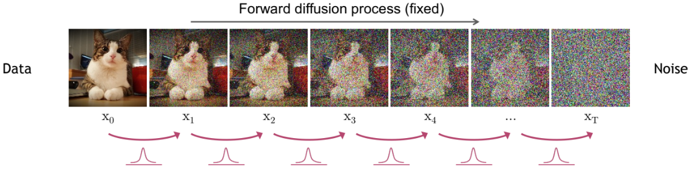
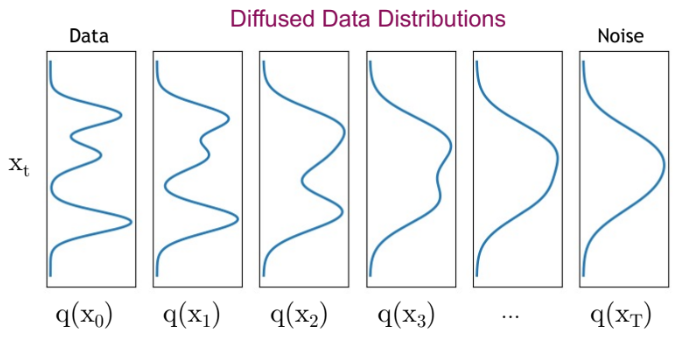
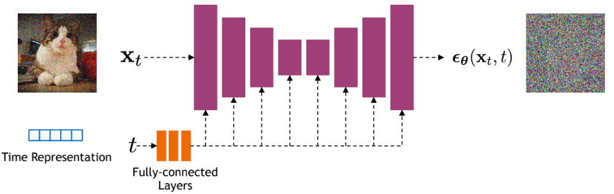

Modelos de difusión#
En este curso, te presentamos los modelos de difusión (diffusion models), introducidos en 2020 en el artículo Denoising Diffusion Probabilistic Models. Desde entonces, se utilizan ampliamente para generar imágenes de manera muy efectiva. Aunque son potentes y fáciles de guiar, tienen un gran inconveniente: son extremadamente lentos.
Este curso se basa en el Tutorial CVPR 2022 y en este artículo. Las imágenes utilizadas en este notebook provienen de estas dos fuentes.
¿Cómo funcionan?#
Los modelos de difusión operan en dos etapas principales:
Adición de ruido (proceso de difusión).
Eliminación de ruido (proceso inverso o denoising).
Ambas etapas son iterativas, lo que significa que el ruido se añade y se elimina de manera progresiva.
Primera etapa: el proceso de difusión#
La primera etapa de un modelo de difusión consiste en tomar una imagen de un conjunto de datos (dataset). Este conjunto está representado por una distribución de probabilidad compleja. El proceso de difusión añade ruido gaussiano a la imagen de forma iterativa, reduciendo gradualmente su complejidad hasta convertirla en una distribución gaussiana simple.
La siguiente figura ilustra el proceso de difusión:

Se observa cómo la distribución evoluciona (volviéndose menos compleja):

Nota: El proceso de difusión destruye progresivamente la estructura de la imagen original.
El proceso de difusión se divide en múltiples pasos denominados diffusion steps. En cada paso, se añade una cantidad predeterminada de ruido gaussiano a la imagen. Cuanto mayor sea el número de pasos:
Menor será la cantidad de ruido añadido en cada iteración.
Más estable será el modelo y mayor la calidad de las imágenes generadas.
Pero también aumentará el tiempo de cómputo.
En la práctica, se suelen elegir muchos pasos (por ejemplo, 1000 en el artículo original).
Segunda etapa: el proceso inverso#
¿Para qué sirve añadir ruido a una imagen? El proceso de difusión genera datos de entrenamiento para el proceso inverso. La idea es aprender a reconstruir la imagen original a partir de la distribución gaussiana obtenida tras la difusión. Así, podremos generar nuevas imágenes muestreando desde dicha distribución.
Nota: Existe cierta similitud con los normalizing flows y los variational autoencoders (VAE).
En cada paso de denoising, se utiliza una red neuronal que recibe:
La imagen en el paso \(t\).
El paso de difusión \(t\).
Su objetivo es predecir el ruido gaussiano (\(\mu\) y \(\sigma^2\)) añadido en el paso \(t-1 \rightarrow t\).
Detalles clave:
Predecir el ruido permite reconstruir la imagen en el paso \(t-1\).
La misma red se usa en todos los pasos; no hay una red diferente por etapa.
El modelo utilizado suele ser una U-Net. Para profundizar en esta arquitectura, consulta el Curso 3 sobre redes convolucionales. En modelos avanzados como Stable Diffusion, se emplea una variante de U-Net que integra transformers.

¿Son los modelos de difusión VAE jerárquicos?#
Como se mencionó anteriormente, los modelos de difusión pueden interpretarse como VAE o normalizing flows. Analicemos su analogía con un VAE jerárquico, que tiene múltiples etapas en el decoder para generar imágenes.
Componente |
Modelo de difusión |
VAE jerárquico |
|---|---|---|
Encoder |
Proceso de difusión (añadir ruido) |
Red neuronal entrenable |
Decoder |
Proceso inverso (denoising) |
Múltiples etapas jerárquicas |
Espacio latente |
Misma dimensión que la entrada |
Dimensión reducida |
Modelo por etapa |
Mismo modelo en todos los pasos |
Modelo diferente por etapa |
Nota: Una analogía similar puede hacerse con los normalizing flows. Para más detalles, consulta el Tutorial CVPR 2022.
Problema principal de los modelos de difusión#
Como se explicó anteriormente, los procesos de difusión y denoising requieren miles de pasos. Cada paso de denoising implica una pasada hacia adelante (forward) de la red U-Net. Por ejemplo:
Con 1000 pasos, la red debe ejecutarse 1000 veces para generar una sola imagen.
Problema clave: Los modelos de difusión son extremadamente lentos.
 Figura extraída del artículo.
Figura extraída del artículo.
Los modelos de difusión superan en rendimiento a los GAN, VAE y normalizing flows para la generación de imágenes, por lo que son la primera opción en aplicaciones actuales.
Solución necesaria: Desarrollar técnicas para acelerarlos. Este curso no profundiza en ellas, pero el Tutorial CVPR 2022 las aborda en detalle (aunque ya existen métodos más recientes). Dato clave: Hoy es posible generar imágenes de calidad en solo 10-20 pasos (frente a los 1000 iniciales).
Los modelos de difusión son un tema candente en investigación, con numerosos desafíos por resolver. Algunos ejemplos:
Rendimiento superior: ¿Por qué superan a los VAE y normalizing flows? ¿Debería la investigación priorizar estas alternativas ahora que entendemos mejor la difusión?
Eficiencia extrema: ¿Es posible generar imágenes en un solo paso?
Aplicaciones discriminativas: ¿Puede la arquitectura de difusión usarse en tareas como clasificación?
Arquitectura óptima: ¿Es la U-Net la mejor opción, o existen alternativas más eficientes?
Generalización: ¿Pueden aplicarse los modelos de difusión a otros tipos de datos (ej. texto, audio, vídeo)?